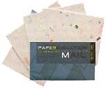
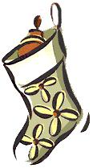
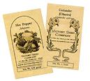

It's the season for giving, and even if you don't personally subscribe to a religion that celebrates a winter gift-fest, chances are you know someone who does. Here are two MOTHER EARTH ish (and economical) gift ideas from small companies that might not have huge displays in department stores, but produce neat stuff nonetheless.
Useful Junk Mail. At some point in the last decade, getting the mail each day devolved from exciting to an exercise in responsible recycling. As e-mail became commonplace, welcome personal letters were replaced by often unwanted direct mailings. Green Field Paper Company [(888) 402-9979 ext. 13; www.greenfieldpaper.com ] has taken an innovative approach to both dilemmas: Turn junk mail into environmentally conscious stationery. For $5.95 you can get a set of Green Field's 100% Junk Mail Cards, made entirely from pulping recycled fibers and that pesky junk mail. The result is a tactile treat, with colors and even the occasional word visible on the cards. The set consists of five cards and five translucent envelopes, which live up to their name. It's the perfect gift to tell someone not only that you love them, but that you would love hearing more from them.
Grow Your Own Salsa. For all the budding gardeners on your list, family-owned heirloom seed dealer Victory Seed Company of Molalla, Oregon [(503) 829-3126; www.victoryseeds.com ], has come up with a hot idea: salsa kits. For just $5.50, these kits include five different heirloom seed packets, instructions for growing and two recipe cards on quality paper, all wrapped up in a clever brown paper bag (the perfect size for stocking stuffing) with simple stamping on the front. The seeds in the pack consist of four basic ingredients, and a fifth that defines the spiciness of the salsa: tomatillo, cilantro, `White Sweet Spanish' onion, `Roma' tomato, and ancho pepper in the mild kit, or jalapeno pepper in the hot packet. The plants can be started indoors and moved out when the weather outside isn't so frightful.
|
 |
 |
 |